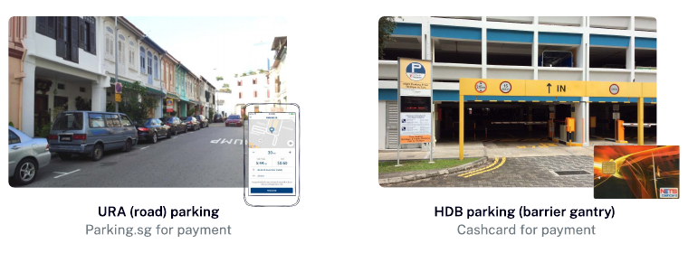
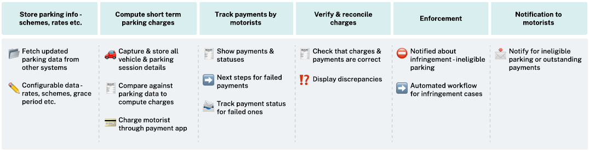
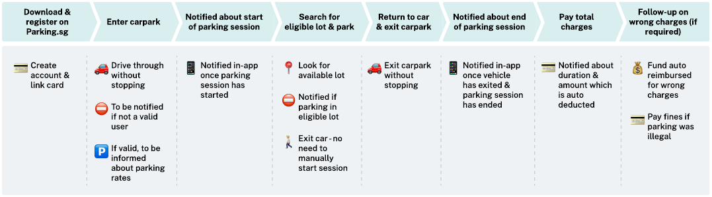
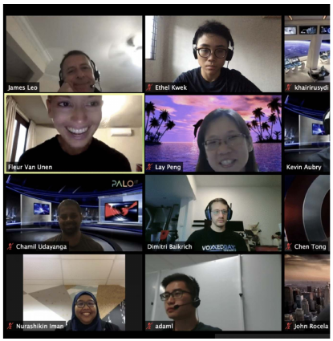
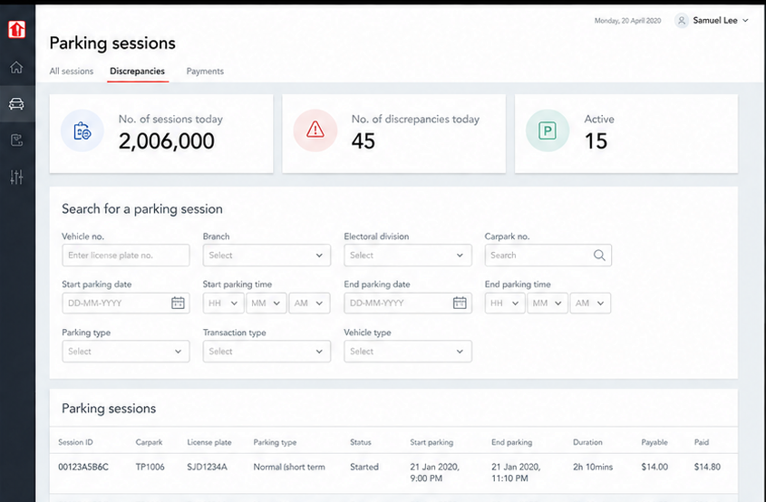

01 / Context
Moving from barrier gantries to licence-plate recognition changed the operating model.
HDB wanted a seamless parking and payment journey built around licence-plate recognition, removing the need for barrier gantries and reducing queues at carpark entrances and exits.
Behind that motorist experience, HDB needed an integrated operational portal. Carpark hardware, software and transaction data were managed by multiple service providers, making price changes, investigations and system improvements slow and dependent on manual verification.

The operating scale
The target experience
Designing both sides of the parking experience.
A seamless journey for motorists depended on giving HDB a reliable operational layer behind it.
Centralise the work behind every parking session.
Bring configuration, charging, payments, reconciliation and enforcement into one connected operational experience.

Make parking feel effortless from entry to resolution.
Remove stopping points and manual steps while keeping payment, eligibility and charge follow-up clear.

02 / Discovery
Research connected the requested features to the work officers actually performed.
I interviewed 10 officers across four departments to understand their responsibilities, tools and current workflows. The research covered carpark operations, system ownership, accounting and data analysis.
Existing workflow
Investigating a wrong charge required repeated handoffs.
An operations manager typically handled 10–30 cases each week, manually moving information between systems, files and teams.
The same case moved through email, Notepad, Excel and internal systems before it could be resolved.
The core problem
Too much effort went into obtaining and verifying data that officers could not fully trust.
An operations manager handled roughly 10–30 discrepancy cases each week, often moving between system checks, spreadsheets, Notepad files and email exchanges with service providers.
Dependent on others
Officers could not access information instantly and had to request data from internal teams or service providers.
Not real-time
Outdated sources created additional verification work and weakened confidence in data integrity.
Labour-intensive
Large datasets were cleaned and cross-referenced manually across several tools.
Low transparency
Service-provider maintenance, data handling and recovery processes were difficult to govern.
03 / Opportunity
Turn fragmented operational data into dependable workflows.
The strongest opportunities were to identify transaction discrepancies automatically, give teams real-time carpark and revenue visibility, and connect previously separate systems into workflows such as reconciliation and record updates.
Pull parking transactions together to surface discrepancies and status changes.
Provide carpark usage, revenue, occupancy and transaction insights in one place.
Reduce handoffs between reconciliation, investigation and record updates.
Create a clearer, shared view of data quality and service-provider performance.
04 / Design principles
Five principles guided the first design direction.
Developed with key stakeholders to keep product decisions anchored in the needs uncovered during discovery.

05 / Design direction
Present essential operational data in a simple, searchable workspace.
The foundational interface prioritised the information operations managers used every day: parking sessions, discrepancy volume, carpark details and transaction search. Shared data patterns were designed to support the needs of other user groups over time.

06 / Reflection
A strong discovery foundation, with delivery boundaries made explicit.
My contribution concluded after defining the overall design direction because of resource planning. The smart-parking programme was later piloted and launched, but I did not have visibility into the final operations portal or post-launch outcomes.
The project strengthened my approach to remote research, cross-functional collaboration and stakeholder alignment. It also reinforced the importance of agreeing on success measures early enough to evaluate operational quality, efficiency and customer impact after launch.